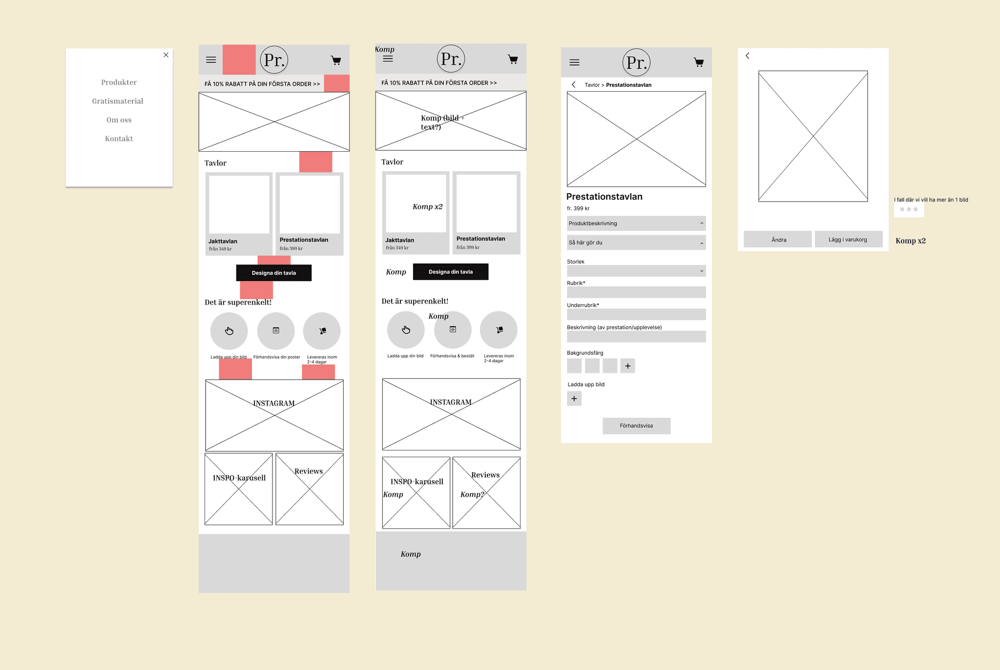
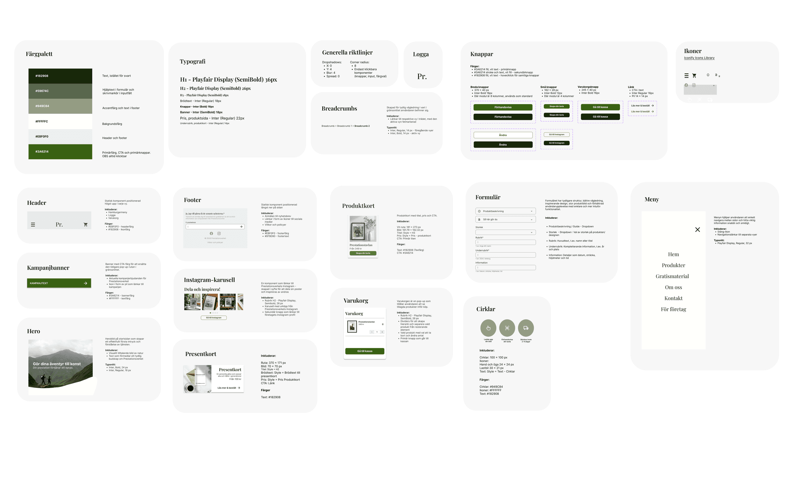
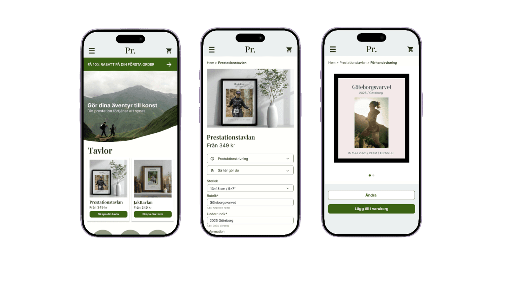

Prestationsverket — E-commerce redesign
- Design System
- UI Design
- 2026

Project info
Prestationsverket is an e-commerce platform that sells personalized posters highlighting achievements and life milestones. This project explores how clarity, structure, and inspiration affect the user experience. Based on usability analysis and team collaboration, the platform was redesigned to reduce friction and reach a broader audience beyond its current focus on running.
- Project type
- Team project — e-commerce redesign
- Focus
- Purchase flow, product pages, design system
- Year
- 2026
- Tools
- Figma
01 — Overview
Create a clearer, more intuitive, and inspiring experience by simplifying the purchase journey, improving product understanding, and expanding the concept.
02 — The problem
The current experience lacks clarity and guidance. Users may struggle to understand what the product is, what’s included, and how the ordering process works. These issues increase friction and the risk of drop-off.
- Unclear product presentation
- Confusing purchase flow
- Limited inspiration
- Narrow communication focused on running
03 — Research and insights
Focused on clarity, structure, and accessibility through clear hierarchy, scannable content, reduced cognitive load, and strong guidance. The visual style follows a clean Scandinavian aesthetic, with attention to mobile-first design, accessibility, and consistency.
04 — Design process
Started with a design brief, aligned on goals, and worked iteratively in Figma. Low-fidelity wireframes were refined into detailed designs supported by a design system including colors, typography, grid, and components.


05 — Final solution
Problem 1: Unclear purchase flow → Simplified and structured the buying process with clearer steps and a more intuitive flow.
Problem 2: Limited inspiration & narrow target group → Broadened the concept beyond sports, added inspirational content, and clarified product value.
The final design is clearer, more consistent, and more engaging. It aims to help users understand the product, navigate the site, and complete purchases more easily.

06 — Reflection
- Clarity is critical in e-commerce
- Strong structure supports decision-making
- Inspiration drives engagement
- Good UX simplifies rather than complicates